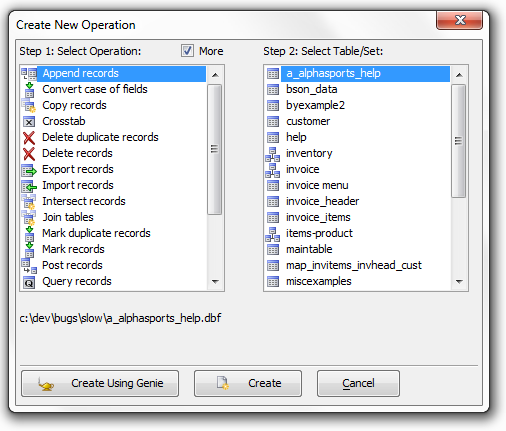

Using the Operation Genies
Alpha Anywhere has detailed Genies to help you perform common operations. The Genies guide you step-by-step through creating an Operation in an easy to understand way. Once you have answered all the Genie's questions, the Genie automatically creates the appropriate Operation.

Create New Operation Genie
Genies make it easy to perform complex operations. For example, the Genies let you perform Update operations that:
Search for a string in a field and replace it with another string
Assign a constant value to a field
Break a single name into its parts (e.g. separate first name and last name fields)
Break a city/state/zip field into its parts (e.g. separate city, state and zip fields)
Assign serial values to a field (e.g. record 1: A100, record 2: A101, record 3: A102 etc.)
Assign random values to a field
Assign a constant value to field, or delete a field's value
Compute the number of days between two date values
Compute time interval between two time values